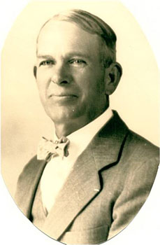
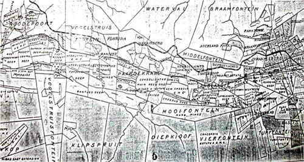
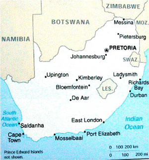
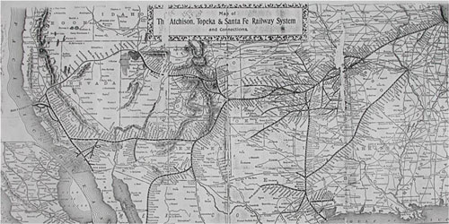
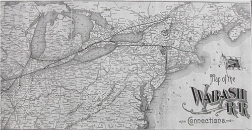
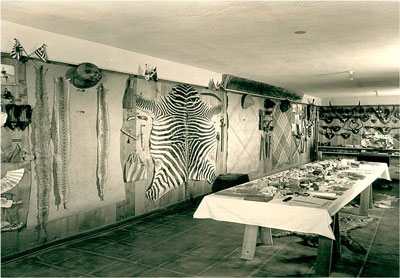

by William Coyle
By present day standards, his journey 100 years ago seems like an ambitious, foot-loose, and courageous one. He was a young man of 25 when he embarked on his travels in September 1897, and 30 when he returned to his family in Pasadena in February 1903. His was a long journey, lasting almost 5 and a half years. Most of this time was spent in South Africa, where he worked as an electrical engineer in a gold mine in Roodepoort, just outside Johannesburg. Siemens, the still well known German company, owned the mine and was his employer. He witnessed armed conflict of the Boer War, which began and ended during his time in South Africa. He spent the last six months traveling from Africa to Europe via the Suez Canal and then back through the Canal to Asia, with stops in Ceylon, India, Singapore, Borneo, the Philippines, Hong Kong, Macao, Canton, Shanghai, and Japan.
Perhaps the most interesting part of his journey was a three-month big game trip up the Pungue River in Mozambique. He was accompanied at first by two and later a third companion. Richardson and his companions demonstrated extraordinary self sufficiency in setting out on such a trip into unknown country in their capacity to fabricate two boats and outfit them by themselves, in their competence with firearms, in their ability to negotiate and work with African natives, and in their surviving in the African wilderness with primitive equipment. On this trip, Richardson contracted a fever, cutting short his hunting trip; he was forced to spend a month convalescing in a Durban hospital.
His trip was clearly an important part of his life and for one who was not attracted to formal schooling, this was his “liberal arts” education. He was quite a reader; among the books he read, according to his journal, were Scott’s Kenilworth; Ryder’s King Solomon’s Mines and White Heart and Black Heart; Hume Nisbit’s A Colonial Tramp; Mark Twain’s Roughing It; and Tolstoy’s On Life. He was an avid photographer, working with a relatively new technology in his day. He became an electrical engineer, probably primarily trained on the job. And finally, he was an aggressive traveler. When he was touring, he wanted to see and experience everything he could: the museums, the architecture, the art, the natural wonders, and the countryside. He cast an observant eye on all that passed his eye, even identifying some plants by their scientific names and researching the history of places he visited. Not war, illness, lack of easy transportation, or foreign language seemed to discourage his relentless curiosity.
The following is from “An Autobiography of Walter L. Richardson, September 1954,” (pp 35 – 43) relating to his trip around the world, 1897 – 1903. This excerpt serves as an introduction to the full account of his travels…
…[L]ater I found myself in Johannesburg, working in the electrical business for Siemen’s and Haleske – South African engineers. I had a new Winchester high-powered rifle, which I purchased in Boston, and some side arms that I was unable to bring into the country for the Jameson Raid has just been pulled off a few months before, and the Boers were very touchy about foreigners with guns. So I boxed up my guns and left them in the Queen’s warehouse in Durban, Natal. It was over three years before I saw them again.
Taking the train from Durban, Natal we went up over the Drakensberg Mountains and into the Transvaal. At Volksrust, we stopped the train for the Boer Customs. I had with me a pocket-size Smith and Wesson revolver. This I slipped inside my sock with the muzzle in my shoe. Kaffirs carried our baggage in the Customs House. My trunk was opened and by some unhappy reasons a half dozen shells from my large six-shooter were left there. At once they wanted to know about the guns, and I told them I left them in Durban. They took everything out of my trunk and looked for a false bottom; then told me to go into the next room. Here was a big hulk of a man with more beard than I had ever seen before. He told me to take off my coat, asked me if I had any jewelry, which I hadn’t, and then felt me all over down to my knees. I drew a long breath when he put a big chalk mark on my back and said, “Go.”
Some months later in Johannesburg, I found that I could register this weapon, which I did. I carried it a great deal of time, for it gave me a very comfortable feeling when going into the Kaffir compounds at night to get out some Kaffir help. I was always very careful, and never got into a jam out there where I had to use it.
During these years there were three tribal wars, and the Boer War was drawing to a close. I was not actively in the Boer War, but my sympathies were with the Boers and I saw much of that war. When the Boer War began, I was on the manager’s staff on the Roodepoort Central Deep Gold Mine – the electrician in charge. As war news broke, the manager called the staff together and asked who would stay. The compound manager said he would, and I said I would. The manager and the other staff members and all the white help left. The compound manager, W. Pretorius, was a Boer, and had the handling of 1,100 Kaffirs in the compound. He let them all go but sixty. Pretorius and I were the only white men left on the property. Pretorius, being a Boer of the State, was soon commandeered to go to the front. I found two Americans to run the pumps and hauling engine. We kept the water out of the mine and surface lights going at night. We had some exciting times there.
One day I picked up a paper in Johannesburg and read that an American war correspondent, John O. Knight, was in Pretoria and going to the Boer front. The name seemed familiar; in fact, I knew a boy by that name in Pasadena. So I wrote to John Knight and found him the same John I knew, and he invited me to come up to Pretoria and go down to the front with him.
Somehow we didn’t connect up on that, but later he visited me at the Central Deep Gold Mine. When the British took Pretoria he was at the mine. He left his Webley revolver with me and started out across the veldt to walk to Pretoria. The British gave him a pass out of the country and I did not see him again until my return to the United States.
It was difficult to get mail in or out of the country during the war. I sent a letter by an American who was leaving the country to be mailed at Lourenzo Marques, Portuguese East Africa. This letter was to a friend in Durban Natal. It was picked up in the Northern Transvaal by a British soldier and given to the American Consul at Durban who notified my friend of it. What became of the American who carried the letter, I never knew.
The British, as they moved into the Transvaal, notified the Boers as best they could that any Boer could lay down his arms and would not be taken prisoner. Quite a few of them did this. A man who had worked on the mine did this and had his rifle and some ammunition at his home. He told me if I would come to his house at night and get it, I could have it.
It was a nice bright night and I went on my bicycle, fastened the gun and ammunition to my bike, and rode away. I had not gone far when I heard horses walking, so I stepped into the shadow of a big tree. Two mounted British soldiers came along very, very close, I heard one say to the other, “I thought I saw someone here.” The other said it was just a shadow, and they passed on. Had I been discovered, I don’t believe I could have talked my way out of that. It would have been a long trip to the Prisoner of War camp at Cape Town for many months for me.
Things were quiet in Roodepoort after the British established themselves. They piled sand bags up around a small hotel, and here a few soldiers stood guard. We were issued passes to go anywhere.
One Fourth of July night a Boer commando came in, burned up a few buildings belonging to Britishers, and shot up the garrison. A few days after that, two British soldiers called at the office and told me to report to Captain so and so at the railway station in Roodepoort. I said, “If your Captain wants to see me, he can find me here,” and I went to lunch. Another American who was working on the mine and I talked it over, and he said, “Let’s go down and see what they are up to.” So we went, but before we reached the station we saw that there were soldiers everywhere. The Captain in charge took our names, etc., and said, “Get into that coal truck.” A train of them with engine attached was waiting there. A cordon of British soldiers was drawn up around the train. Most of the male white population was there – all of the old Boers who were too old to fight, and the younger ones who had laid down their arms and all the mine people. Only the few women and Kaffirs were left on the mines or in town. The Boer women came down with hot coffee and cakes and soldiers passed it through the lines to us.
It did not look too good to me, but it seemed nothing could be done about it. After a long, long wait, the Captain’s orderly came out of the station and called off our names. “Get out of the trucks.” My name, along with all the other mine people, was called out, and we were very glad to get out of those trucks. The whistle blew and the train pulled out for the Prisoner of War camp at Cape Town. There were all those old Boers, too old to fight, and the younger men who had lain down their arms on the promise of no arrest, now taken off to prison. There was weeping among the women and children as they slowly went back to their homes.
A running battle was fought by the British between our mine and Dornkop. It was fought one afternoon. It was blood curdling to listen to the scream of shrapnel and see it bursting all around, some pretty close. In the morning the British were on our property, more bullets were flying about, and their forces were moving toward Pretoria. A British horse was killed in front of the mine office where I lived. The British had control of most everything before long. The fighting Boers moved north where they kept it up quite a time before surrendering.
Things had settled down a bit now. I could go on that long postponed hunting trip. And, strange as it may seem, on the train down to Durban Natal I met two young chaps who were going on a hunting trip up in the same part of the country that I had hoped to hunt in. One, E. Gooyer, about my own age, born in Africa, had some experiences hunting in Maneca Land and spoke the Shangan Kaffir quite fluently. The other, a young Scot, W.J. MacIntyre, born in Persia, educated in India, and signed up with the Queen’s forces in Scotland and was now getting his discharge in Natal. Mac, though only about 20 years old, was a very good rifle shot. We decided to go together. I considered myself very lucky to fall in with two perfect strangers, and to find them such good dependable companions.
It was a 12-day trip in a small and uncomfortable little steamer to the little Portuguese village of Beira, about 1,000 miles up the east coast of Africa. Here we built two boats to go up the Pungue River. We had oars, sail, and poled the boats when we reached shallow water. We made our first permanent camp near the junction of the Big Ameti, a small river coming in on the left, about 50 miles above Beira. Here we found quantities of waterbuck, hartebeest, bushbuck, zebra, and tsesebe. Shot a leopard here; also a Serval, an African wildcat. Picked up a fresh elephant spoor, but never caught up with the herd.
Some days after moving up the Pungue to the Dingui-Dingui, a branch river coming into the right. Along this small river there were great pools and many hippopotami living in them. They made roadways through the tall lush grass and slid down the steep banks of the pools. At one place we found quite a sizable Kaffir village, or kraal, as they are called out there. These were the Shangana, the old Induna headman, Shacura, welcomed us and wanted a gun. Of course we didn’t give him one, for guns to Kaffirs were taboo. We traded rock salt, which they would eat like candy. They had Kaffir and Indian corn called mealies in that country; also sweet potatoes. Our supply of fresh vegetables had run out, and this Kaffir produce was very welcome.
We carried rice for our boys. All Kaffirs are “boys” there, regardless of age. We gave them rice sparingly, as we had to transport it, but there was always an abundance of fresh meat for them, for game was plentiful and someone, or all of us, hunted every day. Game was so numerous that sometimes in the morning we were able to shoot it from our blankets. In this area we found buffalo not plentiful, for the Rinderpest had swept South Africa decimating the great herds of buffalo that were once there and large antelope. We shot several buffalo here. They are considered Africa’s most dangerous big game. However, we had no adventure with them.
Quite a number of hippos were added to our bag at this point, as were waterbuck, gems buck, bushbuck, hartebeest, zebra, and some of the smaller antelope. There were many lion and a few elephant. Elephant were in the high country bordering the plains. The river and the pools were full of crocodile, some 10 or 15 feet long.
Hyenas howled and the lions roared along with the deep bellowing of the old bull hippos as they fought each other in the pools, and then there was a night bird that kept up a constant rattle, like shaking a stone in a wooden box. Besides all this, there were many other sounds. Large monitor lizards sounded like babies crying as they called their mates at night. This was the music we went to sleep on, with the buzzing of millions of mosquitoes.
We stayed in this country some time, hunting over the plains and the jungle-clad high country beyond. We moved our camp several times, and finally overtaken by the fever that knocks the white man down like a club, we decided to leave the country. I was the first stricken. One day I was fine, and the next shaky and miserable. It was a long journey in our boats down to Frontesvilla, where we waited some time for the train that ran twice a week to take us to Beira some forty miles away. At Beira we picked up a tramp freighter that took us to Durban and here I became very ill from the fever and one day awoke to find myself in the Addington Hospital, where a few days before a friend had taken me. I spent a month in the hospital.
I quite fully recovered from the fever, and some weeks later I took a north German Lloyd boat up the East coast to Rotterdam, Holland. That was nice trip. A slow boat making many stops – called at Majunga in Madagascar, and Nossi Be, and Lourenzo Marques on the coast, Chinde, Quililmane, Mozambique, Dar-es Salamm, Zanzibar, Monmassa, Aden, Suez, Port Said, Naples, Lisbon, and Rotterdam. The ship picked up cargos of various sorts, including ebony and ivory, and gave us lots of shore leave.
I spent the summer touring over Europe, England, Ireland, Scotland, Norway, Sweden, Denmark, Germany, Switzerland, and Italy. Taking a circular knap sack trip over Switzerland and a short trip over to Vienna, Austria, I returned to Naples, took a boat to Port Said, and spent some little time in Egypt. Then on to India, Singapore, and another tramp boat to Labuan, North Borneo, and Manila. I spent some time in Luzon. At that time Aguinaldo was shooting up our soldier boys and one had to be careful. [Philippine independence leader. Of Chinese and Tagalog parentage, he was educated at the Univ. of Santo Tomas, Manila, and became a leader of the Katipunan, a revolutionary society that fought the Spanish. Philippine independence was declared in 1898 and Aguinaldo became president, but within months Spain signed a treaty ceding the islands to the U.S. Aguinaldo fought U.S. forces until he was captured in 1901. After taking an oath of allegiance to the U.S., he was induced to retire from public life. He collaborated with the Japanese during World War II; after the war he was briefly imprisoned; released by presidential amnesty, he was vindicated by his appointment to the Council of State in 1950. In his later years he promoted nationalism, democracy, and improvement of relations between the U.S. and the Philippines.]
Continuing on again, I went to Hong Kong, Caton, Shanghai, Nagasaki, and the Inland Sea to Osaka, Kyoto, and around to Yokohama, Victoria, Vancouver, Seattle, San Francisco, San Pedro, and home.
It was good to be home after six long years of wandering. Things had changed in that time. About two years after my return, I was married to Miss Martha Bebb of Rockford, Illinois. Our little family came along and we lived on the old Blick place at 120 Arroyo Drive, and an adjoining acre we bought from Mrs. Blick’s sister. This was a beautiful spot covered with live oaks and the arroyo was all undisturbed by man at that time.
“Walter Richardson Writers from Where the Hippopotamus Lives”
Pasadena Daily News
October 31st, 1901
“South African Souvenirs and Relics: Walter Richardson’ Collection Has Come”
Pasadena Daily News
May 23rd, 1902
“W.L. Richardson Now in India: Describes Manner of Life”
Pasadena Daily News
December 24th, 1902